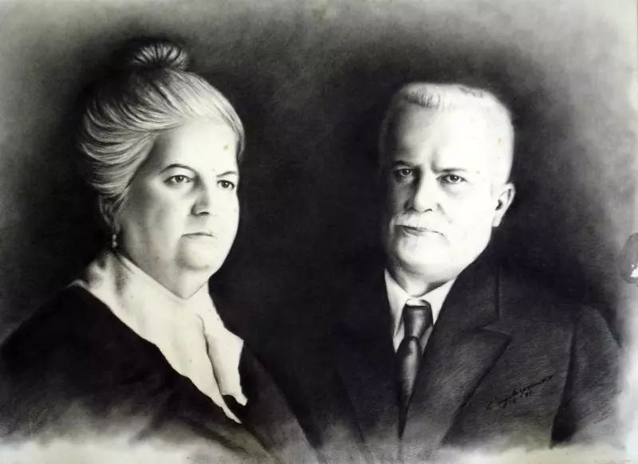

Casarão de Procópio Gomes

Bem-vindo(a) ao Casarão de Procópio Gomes

A pedido de Procópio Gomes de Oliveira, uma das pessoas mais influentes em Joinville no início do século 20, o casarão Villa Maria foi construída no ano de 1913 para homenagear a própria esposa, Maria Balbina.
Vindo de Paraty, onde é atualmente localizada a cidade de Araquari, Procópio chegou com a família em Joinville para explorar a agricultura na região próxima à serra Dona Francisca. Empresário, ele então entrou na política e se tornou superintendente (o que vale a prefeito nos dias de hoje) em 1903. Ficou no cargo até o ano de 1907, mas retornou em 1911. Mas antes de sair novamente, em 1914, construiu o casarão para homenagear Maria.
Porém, o que era para ser uma história de uma bela homenagem, se tornou cheia de mistérios. Isto porque, a casa, localizada na rua que carrega o nome de Procópio Gomes, no bairro Bucarein, possui diversas histórias ao longo do tempo de ser mal-assombrada por espíritos de escravos que receberam maus tratos na época em que a família viveu na residência.
Casarão Villa Maria, por volta da década de 1920. Foto: Acervo Arquivo Histórico de Joinville
Histórico
Segundo o coordenador do arquivo histórico de Joinville, Dilney Cunha, não existe nenhum documento, registro histórico ou depoimento de pessoas da época que comprove a teoria. Além disso, o historiador explica que no momento em que a casa foi erguida, já não existia mais escravidão. “Como a família era bastante rica, existiam empregados, o que é algo diferente”, frisa. Em relação a possíveis pessoas ou bebês enterradas no local, Dilney afirma que também não existe nenhum documento de algum cemitério ou algo relacionado. “Isso, de certeza, não existiu.”
Outro ponto muito debatido sobre o casarão Vila Maria é sobre os comércios que passaram por ali. Após a morte de Procópio Gomes e de Maria Balbina, em 1934 e 1939, respectivamente, o imóvel permaneceu com os filhos do casal até o ano de 2004. Após isso, passou a ser alugado para diversos fins. Conforme as histórias, nenhuma empresa comercial durou muito tempo e até chegaram a decretar falência. “Por último, que eu lembro porque entrei no casarão, era um local para festa infantis”, relatou Dilney.
Arquitetura
Estilo Neoclássico: O casarão apresenta elementos neoclássicos, evidenciados nas colunas, janelas simétricas e na proporção equilibrada das fachadas.
Uso de Materiais Locais: A construção utiliza materiais típicos da região, como madeira de lei e alvenaria, que são comuns em edifícios históricos de Joinville.
Detalhes Ornamentais: A fachada é ricamente decorada, com detalhes como cornijas, beirais e molduras ao redor das janelas. Esses elementos decorativos são típicos da arquitetura do período em que o casarão foi construído.
Importância Cultural
O casarão representa uma época específica da história de Joinville, refletindo a influência da colonização europeia na arquitetura e na cultura da cidade. Sua preservação ajuda a manter viva a memória coletiva da comunidade.
2. Identidade Cultural
Como um dos poucos exemplares da arquitetura neoclássica na região, o casarão contribui para a identidade cultural de Joinville. Ele é um marco que liga a população à sua história, promovendo um senso de pertencimento.
3. Centro de Cultura e Arte
 Fachada do Casarão
Fachada do Casarão